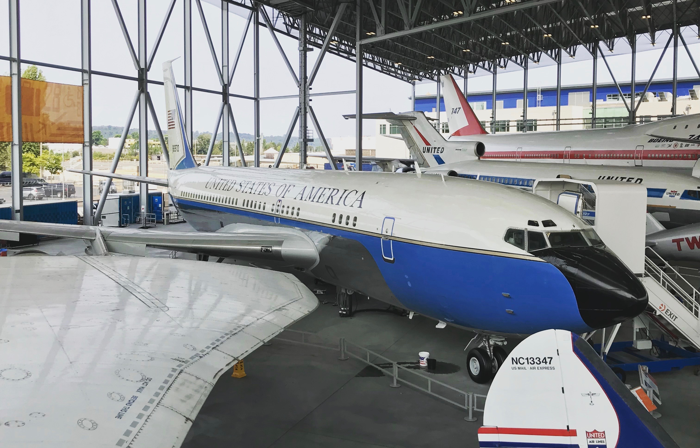
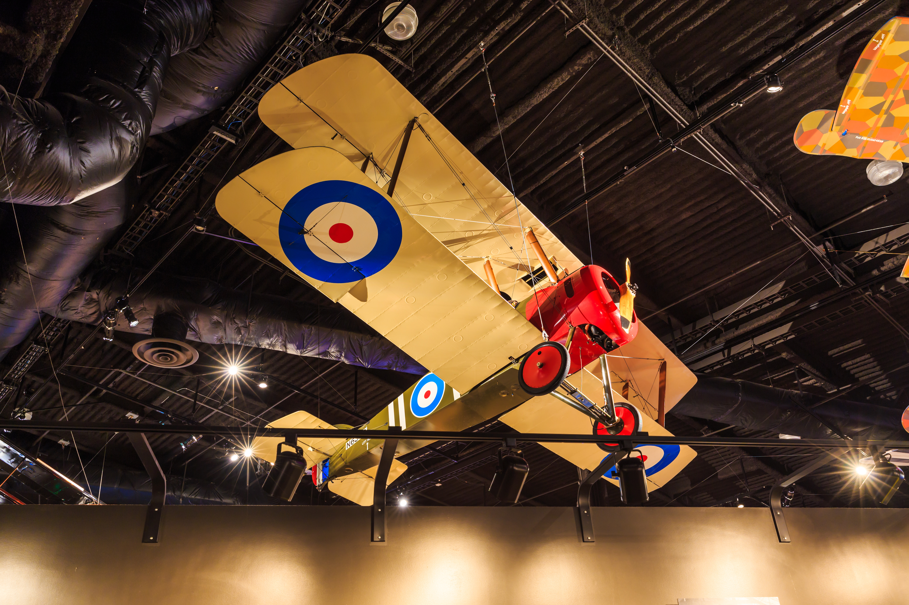
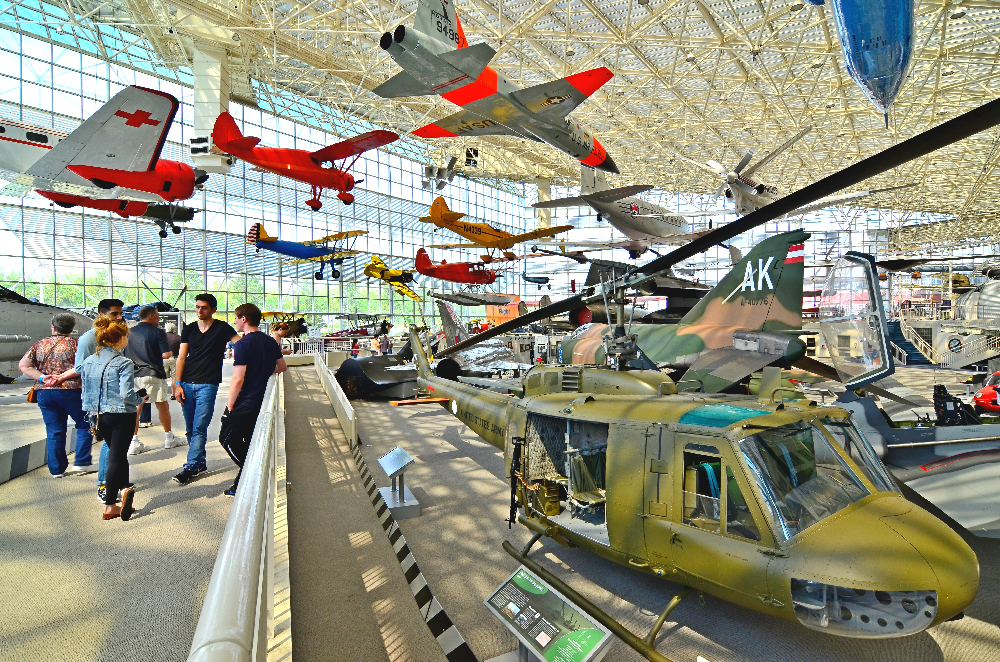
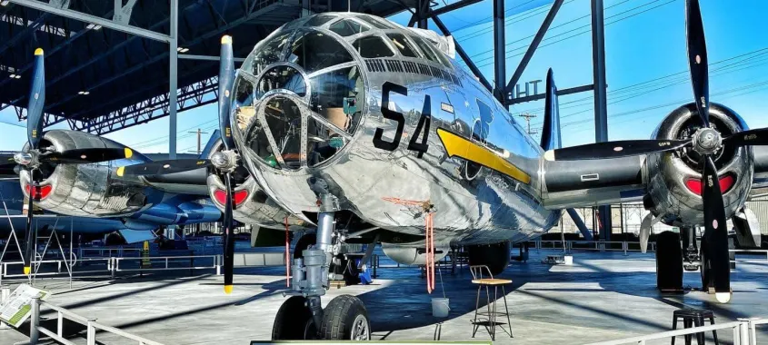

A Visit to The Museum of Flight
Taking off at the Museum of Flight
It shouldn't be entirely surprising to find such an impressive aviation museum in Seattle – this is, after all, the home of Boeing, founded here by William E Boeing in 1916. Get ready for an exciting jet-propelled journey through war, peace, space rockets and inspired engineering. The story of how we got from the Wright Brothers to the first moon landing in less than 66 years is powerfully told using film, photos, audio, words, flight simulators, and of course, a wonderful collection of flying machines.
Description
Aircraft large and small are crammed into the museum's hangars, from a ginormous Boeing 747 and a decommissioned Concorde to the tiny Caproni Ca 20, the first ever fighter plane, built during WWI. You can get within touching distance of a Lockheed Model 10-E Electra, the same model plane that Emelia Earhart was flying when she vanished over the Pacific, and walk through the Boeing VC-137B that was the first presidential jet to use the call sign 'Air Force One'.
Tickets & Practicalities
It's worth buying tickets ahead of time to make sure you get in, as availability can be limited on the day, and there's heavy demand from school groups. The museum has plenty of parking, which is handy, as driving is the easiest way to reach the museum (Metro bus 124 also runs here from downtown). Pilots can also come by air – the museum has landing space for up to five light aircraft daily!
Some aircraft are originals, some are reproductions – including most of the exhibits from the space age – but they all contribute to an evocative journey through the history of man's quest to take to the air. Look out for such oddities as Paul MacCready's Gossamer Albatross, which crossed the English Channel by pedal power in 1979, and Aerocar International's Aerocar, designed for both the airways and the highway.
Plenty of displays cover the work of William E Boeing, the former lumber mogul who founded the Boeing aircraft company, transforming the world of travel, and the city of Seattle, in the process. The hangar known as the Red Barn was Boeing's original production facility, producing wood-framed, fabric covered aircraft in the first half of the 20th century.
